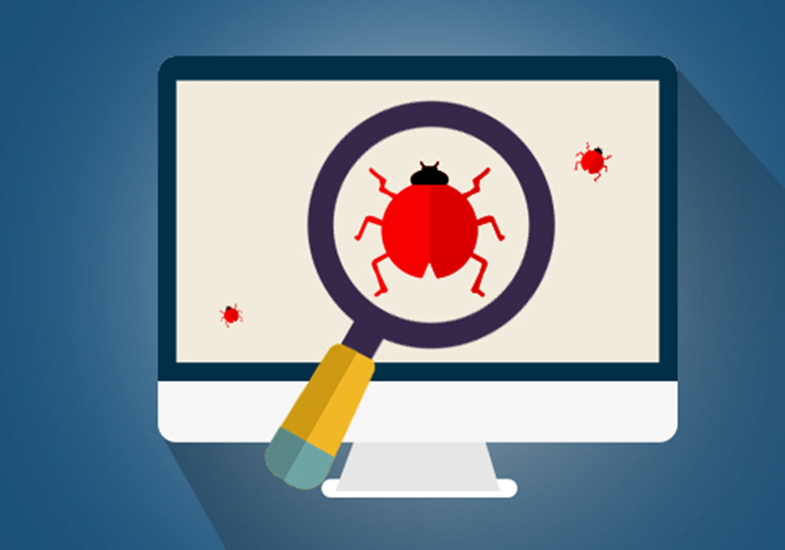

Keep an eye out for the content I'll be posting, such as:

Software Testing Projects (and their accompanying documentation)
Technical Write-ups about the things I've learned

Video-game reviews, and opinions on the game industry at large
And whatever else my mind conjures up